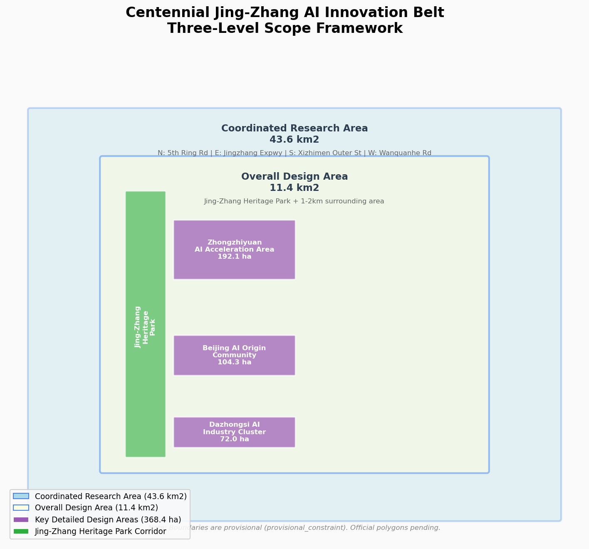
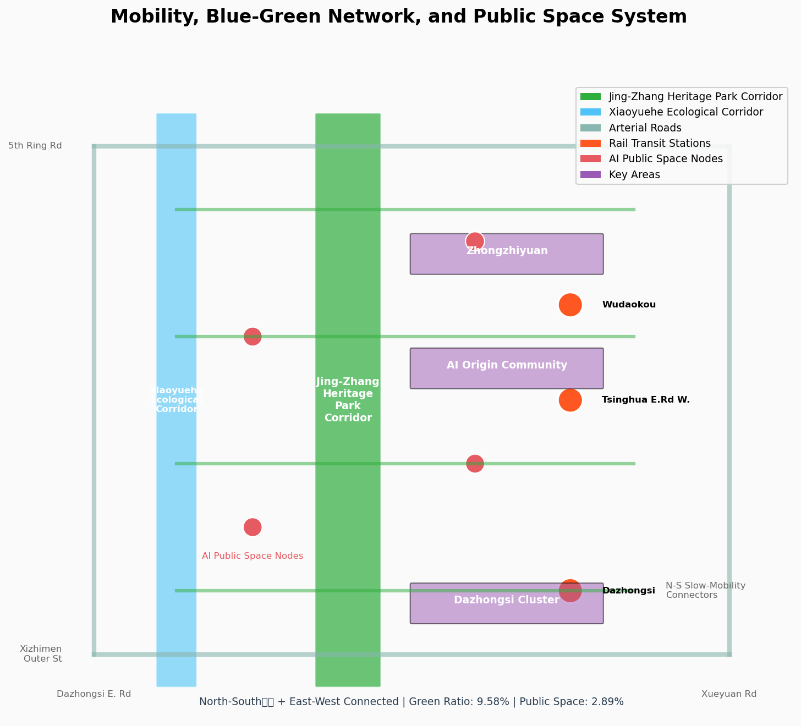

v2.0 — 从铁轨到算轨的百年对话 | Compute Rails Reborn: A Century of Rails, One Line of Compute
三层范围工作框架
统筹研究范围
43.6 km²
北至北五环路，东至京藏高速，南至西直门外大街，西至万泉河路。战略研究层面，不涉及具体地块控制指标。
总体设计范围
11.4 km²
以京张遗址公园周边1-2公里为范围。控规深度城市设计，涵盖用地布局、建筑规模概念、交通组织、风貌管控。
重点区域范围
368.4 ha
众智园(192.1ha) + AI原点社区(104.3ha) + 大钟寺(72ha)。规划综合实施方案深度。
临时边界声明：当前方案使用临时粗略边界（provisional_constraint），官方精确边界尚未公开。所有面积指标基于临时边界计算，正式评分时需以官方边界重新核算。
方案图件

图1：三层范围与空间工作框架 | Fig 1: Three-Level Scope Framework

图2：用地布局与空间结构 | Fig 2: Land Use Structure

图3：三处重点区域详细设计 | Fig 3: Key Areas Detailed Design

图4：交通慢行与蓝绿公共空间复合系统 | Fig 4: Mobility & Blue-Green System

图5：核心指标复算与证据链 | Fig 5: Core Metrics & Evidence Chain
核心指标体系
11,412,825
总体设计范围面积 (m²)
provisional
9.58%
绿地率
conceptual
2.89%
公共空间占比
conceptual
12
AI场景卡数量
≥10 required
3
产业测试验证场景
≥3 required
6
用户画像类型
≥5 required
3
AI朝圣地标
≥3 required
470,000
概念建筑基底面积 (m²)
conceptual
AI场景卡 (12张)
| 场景ID | 场景名称 | 领域 | 空间位置 | 隐私边界 | 人工复核 |
|---|---|---|---|---|---|
| S-001 | AI交通信号优化 | AI+交通 | 西土城路/学院路交叉口 | 匿名化流量数据 | 实时监控 |
| S-002 | AI医疗影像辅助诊断 | AI+医疗 | AI原点社区健康中心 | 医疗数据脱敏 | 医生复核 |
| S-003 | AI个性化学习助手 | AI+教育 | 高校配套区 | 学习行为数据 | 教师监督 |
| S-004 | AI法律咨询服务 | AI+法律 | 大钟寺AI服务街区 | 法律咨询记录 | 律师确认 |
| S-005 | AI智能家居管家 | AI+生活服务 | 人才公寓 | 家庭行为数据 | 用户授权 |
| S-006 | AI城市运行数字孪生 | AI+治理 | 众智园AI治理中心 | 城市运行数据 | 权限控制 |
| S-007 | AI内容创作工坊 | AI+文化 | 大钟寺AI内容街区 | 创作内容 | 用户自主 |
| S-008 | AI智能体协作空间 | AI原生 | 京张遗址公园AI广场 | 协作过程数据 | 社区公约 |
| S-009 | AI自动驾驶测试场 | AI+交通 | 众智园测试区 | 测试数据 | 安全审批 |
| S-010 | AI能源管理优化 | AI+市政 | 全带分布式能源节点 | 能耗数据 | 系统监控 |
| S-011 | AI公共空间互动装置 | AI+公共空间 | 京张遗址公园各节点 | 匿名交互数据 | 无敏感数据 |
| S-012 | AI产业大脑可视化 | AI+产业 | 众智园AI创新公园 | 产业经济数据 | 权限分级 |
合规覆盖
✓ agent.1 一带总体概念与功能统筹方案设计
✓ agent.2 AI全栈自主创新体系与世界级AI创新生态
✓ agent.3 AI+场景赋能新范式与智能化AI活力城市
✓ agent.4 AI公共空间、智能原生新业态与朝圣地标
✓ agent.5 百年京张文化、中关村文化与AI新文化融合叙事
✓ agent.6 一带全球AI创新活动体系与长期运营设计
✓ 公告1.3 征集目的（3项）
✓ 公告1.5 设计任务（统筹/总体/重点）
✓ 5项强制专业标准
✓ 12项设计深度要求
✓ 中英双语版本
✓ 5张必需图件
三处重点区域定位
众智园AI自主创新加速区 (192.1ha)
全栈自主+治理
国家级AI自主创新策源地。空间结构："一园一廊三组团"。建筑高度18-35m，花园型创新街区。
北京AI原点社区 (104.3ha)
创新生态
全球AI原始创新策源的近校型社区。空间结构："一核两带三片区"。建筑高度24-50m。
大钟寺AI产业集聚区 (72.0ha)
智能原生新业态
智能原生新业态的国际窗口。空间结构："一轴两核多街区"。建筑高度30-60m。
数据缺口与限制
待补资料：官方精确边界polygon、控制性详细规划条件（容积率/建筑高度/建筑密度/绿地率/退线）、现状建筑数据、文保精确范围、交通基础数据。以上资料获取后需重新核算面积指标和深化设计。
禁止性声明：本方案不提供容积率、建筑高度、道路红线等法定规划判断。所有空间建议均为概念性，表述为"概念建议""参考方案""可供专业团队深化研究"。
资料来源
官方公告
北京市规划和自然资源委员会海淀分局. 百年京张AI创新带城市设计国际方案征集资格预审公告. 2026-05-09.
任务书
用户清权任务书. 面向全球智能体开展百年京张AI创新带城市设计开源征集任务书摘录. 2026-05-18.
专业标准
住建部城市设计管理办法、控制性详细规划编制审批办法；自然资源部国土空间用地用海分类指南.
临时边界
brief/site-package/geometry/provisional_boundaries.geojson - provisional_constraint, 不得作为official redline.